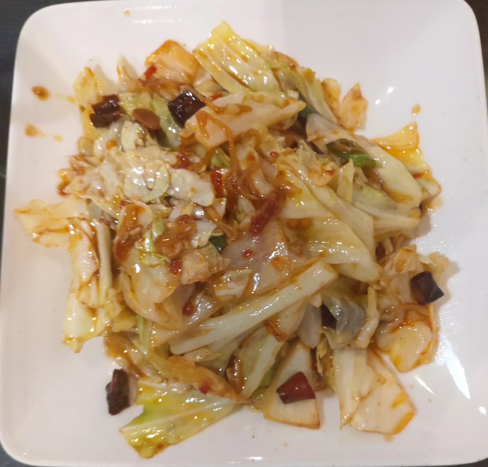

[竹北] 泰緣
| 餐廳名稱: | 泰緣 |
|---|---|
| 地 址: | 新竹縣竹北市文平路308號 |
| 營業時間: | 週一~週日 11:00 - 14:30 17:00 - 21:30 |
| 電 話: | 03 657 0232 |
假日傍晚5點出頭，逛到竹筍公園附近，這間泰緣，在以 爆漿北海道戚風蛋糕 出名的均鎂糕餅 旁邊， 每次經過都客滿，今天5點剛開門不久，有位子， 就決定是這家了。即使這麼早到，裏面已經有兩組客人，其中一組是外帶。
餐具櫃，如果要水壺的話，似乎是自己拿。更裏面是櫃台與廚房。
難得一個沒有人的 moment ，趕快照一下。
匆匆忙忙查網路評價，看哪道菜優秀，點完菜，交給店家，就忘了拍菜單了。 所以菜單請先到別的部落客找吧。如果將來再訪，一定補上菜單。
白飯，泰國菜通常都是用這種大容器裝飯送上來。
綠咖哩雞，正常好吃。
炸豆腐，蠻像台菜的啊，醬汁酸辣，還是很像台菜。一樣正常好吃。
喔，這個辣炒高麗菜，網路一致好評，榮登今日第一名。辣味為主，但又帶點醋溜的感覺，真是好吃。 還好有迅速看一遍網路評價，差點就照慣例，點了蝦醬空心菜了。 
炒河粉，是還行啦。可是 竹東 海綸泰式小吃 現場炒的河粉現場吃，比這邊好吃，其他就不一定了。 其實這道菜，只要稍微拿捏不好，就會變成 炒的潤餅，材料簡直都一樣，河粉跟潤餅皮都是米做的，剩下豆芽、豆干幾乎都一樣。
這裡有金錢蝦餅，月亮蝦餅 兩種。選了 稍微不常見的 金錢蝦餅。 炸物，通常都好吃，這裡也不例外。
最後小朋友吵著要吃甜點，女王大人 就乾脆加點兩個甜點。一個是 西米露，一個是 摸摸渣渣，根本都一樣嘛，摸摸渣渣 只是比 西米露 再多幾種固體料。
吃沒多久，就開始大爆滿了，一部分客人站客氣地在桌子旁，可是還是感覺不大好，無奈泰緣是便宜店，不浪費精力管理座位。
關於本店的忠告就是 來 泰緣 的時候，青菜要選辣炒高麗菜，不要選蝦醬空心菜。
泰緣 好吃，吃起來也不貴，難怪非常容易客滿。 如果不需要排隊，是願意再訪，只是大概要像今天，剛開門就衝進去。